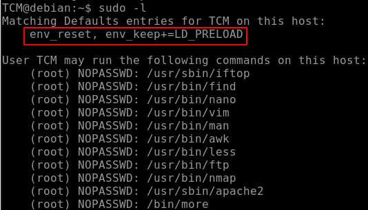

If we do sudo -l, we can see the enviroment variable LS_PRELOAD:

Preloading is a function of the ld command.
The ld command is available on most Unix systems.
What we are doing here is we are loading a user shared library, before any other libraries are loaded.
In order to exploit that, we can make our own malicious library!!!
To get started, we can create a file called "shell.c"

We need now to compile this file with PIC (Position Indipentent Code)
That means the script will work wherever the shell is.
About -shared:
Produce a shared object which can then be linked with other objects to form an executable.
Not all systems support this option.
For predictable results, you must also specify the same set of options
that were used to generate code (-fpic, -fPIC, or model suboptions) when you specify this option.
About .so files:
https://stackoverflow.com/questions/9809213/what-are-a-and-so-files
Archive libraries (.a) are statically linked i.e when you compile your program with -c option in gcc. So, if there's any change in library, you need to compile and build your code again.
The advantage of .so (shared object) over .a library is that they are linked during the runtime i.e. after creation of your .o file -o option in gcc. So, if there's any change in .so file, you don't need to recompile your main program. But make sure that your main program is linked to the new .so file with ln command.
This will help you to build the .so files. http://www.yolinux.com/TUTORIALS/LibraryArchives-StaticAndDynamic.html
Hope this helps.
more info about gcc:
https://linux.die.net/man/1/gcc

Now we can choose the Shared Object (.so) specifing it in the command line:
(We need to call it from the full path)
We need to use anything we can use from sudo commands (E.G. apache2, nano, vim etc.)